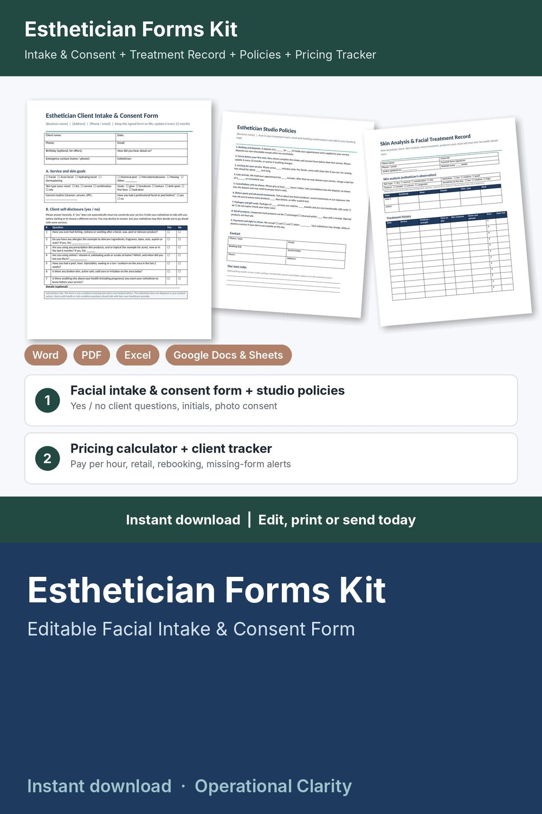

Esthetician Forms Kit

Price your facials so they pay you, get the intake and consent form on file, and know when every client is due back: a complete esthetician forms kit with a working pricing calculator and client tracker, not just a few printable pages.
WHAT'S INSIDE
- Esthetician Client Intake & Consent Form (Word + PDF, 2 pages): client details, service and skin goals, current routine, simple yes / no client self-disclosure questions, 7 initialed acknowledgments (results vary, temporary redness or sensitivity, aftercare, patch test offer, studio policies agreed), consent and release, before / after photo consent, client and esthetician signatures, yearly review / update log.
- Skin Analysis & Facial Treatment Record (Word + PDF, 2 pages): skin type, hydration, texture and sensitivity check boxes, notes by face zone, treatment history (products / strength, time on skin, skin response, home care advised, price, next visit), retail, deposits and balances, 3-visit treatment plan.
- Esthetician Studio Policies (Word + PDF): 9 ready-to-edit policies for deposits, forms before the first visit, arriving for your service, late arrivals, cancellations and no-shows, before peels and advanced treatments, packages and gift cards, retail products, payments and right to refuse, plus a blank page for your own aftercare instructions.
- Esthetician Service Menu & Price List (Word + PDF): editable menu with times and prices for facials, treatments, waxing and add-ons.
- Esthetician Pricing Calculator & Client Tracker (Google Sheets / Excel, 6 tabs):
* Service Menu: minutes, product cost and your price for each facial, peel, wax and add-on; suggested price from your target hourly pay, overhead and card fees; what you keep and your real pay per hour; BELOW SUGGESTED flag
* Settings: target pay, monthly overhead, booked hours, card fees, deposit % and minimum, rounding, how often clients update their intake form
* Clients: contact details, skin type and goals, consent form date, intake updated date, photo consent, visits, total spent, retail bought, next visit due and rebook alerts (REBOOK NOW / DUE SOON / BOOKED); no health information stored
* Appointments: service and add-on looked up from your menu, discounts, deposits, refunds, status, retail products sold, days since last visit, balances and alerts (CONSENT MISSING / INTAKE OUT OF DATE / BALANCE DUE / DEPOSIT DUE / SEND FORMS / UPCOMING / UPDATE STATUS)
* Dashboard: service revenue, retail sales, tips, product costs, card fees, what you keep, pay per hour worked, average ticket, no-show rate, deposits held, month-by-month and service-by-service tables, chart and a list of appointments that need attention
- START HERE guide (PDF)
HOW IT WORKS
1. Enter your target pay, overhead, card fees and intake update period on Settings.
2. Add your services on the Service Menu tab, fix anything flagged BELOW SUGGESTED, and copy your prices into the printable menu.
3. Send new clients the policies and the Intake & Consent Form before their first visit; note the consent date and intake date on Clients.
4. Log each booking and deposit; price, time and product cost fill in automatically.
5. After each visit, record payment, tip and retail sales, and watch the alerts for missing or out-of-date forms, balances, deposits and clients due back.
Example data (10 services, 14 sample clients, 49 appointments) shows how it all connects; delete it and type your own. Yellow cells = type here, green cells = calculated.
FORMATS
- Word .docx (edit in Microsoft Word, Google Docs, Pages or LibreOffice) + PDF, US Letter
- Excel .xlsx made for Google Sheets (also works in Excel and LibreOffice; no macros)
This is an instant digital download, no physical item will be shipped.
Editable template, not legal advice. Have it reviewed by a local attorney and check your state board of cosmetology and local requirements (consent wording, client records, which services your license covers) before you use it. The client questions are simple yes / no self-disclosures: information only, not a medical screening tool and not medical advice. No aftercare or medical advice is included.